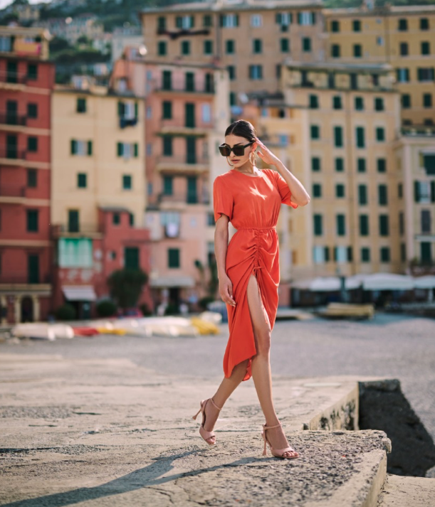
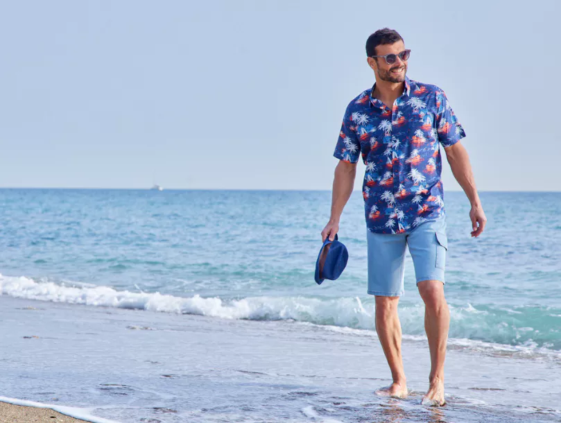

La Mode en Espagne
Les Espagnols adoptent un style vestimentaire moderne, influencé par la mode européenne, avec un grand intérêt pour les marques locales comme Zara, Mango ou Massimo Dutti, qui sont célèbres dans le monde entier. Cependant, lors des festivals traditionnels, il est courant de voir des tenues plus classiques comme les robes à volants des danseuses de flamenco, ou encore les costumes des toreros pendant les corridas. Le port de costumes traditionnels reflète l’attachement des Espagnols à leur patrimoine et à leurs traditions culturelles.
Vêtements Modernes
Les Espagnols affichent un style vestimentaire moderne, souvent influencé par la mode européenne et les marques locales bien connues comme Zara, Mango ou Massimo Dutti, qui se distinguent à l'international. Les jeunes générations optent pour des tenues urbaines et élégantes, mêlant tendances minimalistes avec des touches de couleurs vives, typiques de la mode espagnole. Cette combinaison unique fait de l’Espagne un acteur influent dans le monde de la mode.

Mode Traditionnelle et Festivités
Lors des festivals, les Espagnols revêtent des tenues traditionnelles, rappelant leur attachement au patrimoine. Pendant les ferias et célébrations régionales, on retrouve les fameuses robes de flamenco avec leurs volants colorés, ainsi que les costumes des toreros, emblèmes de la culture espagnole. Ces vêtements, souvent faits main, sont une fierté locale et attirent les touristes venus découvrir ces traditions.
La Mode Artisanale et le Made in Spain
Le "Made in Spain" est valorisé à travers une production artisanale de qualité, mettant en avant des matériaux comme le cuir et les textiles naturels. Dans les régions comme l'Andalousie, les artisans fabriquent encore des vêtements et accessoires de manière traditionnelle, perpétuant des techniques ancestrales. Ce savoir-faire est très prisé par les amateurs de mode éthique et durable, et de nombreuses marques espagnoles en font leur image de marque.
Influence des Saisons et du Climat
En Espagne, la mode varie considérablement selon la région et le climat. Dans les villes côtières comme Barcelone et Valence, les vêtements sont souvent légers, aux couleurs vives, adaptés aux températures chaudes. Dans les régions du nord comme le Pays basque, les tenues sont plus adaptées aux températures fraîches, avec des manteaux et des vêtements en laine. Cette diversité climatique crée un éventail de styles qui reflètent la diversité culturelle du pays.
 Influence de la Haute Couture et Créateurs Espagnols
La haute couture espagnole est incarnée par des créateurs renommés comme Cristóbal Balenciaga et Paco Rabanne, qui ont marqué l’histoire de la mode mondiale. Aujourd’hui, de jeunes créateurs espagnols continuent d’innover, en revisitant les styles traditionnels avec une touche contemporaine. Les défilés et les semaines de la mode à Madrid et Barcelone sont devenus des événements majeurs qui attirent des passionnés de mode du monde entier.